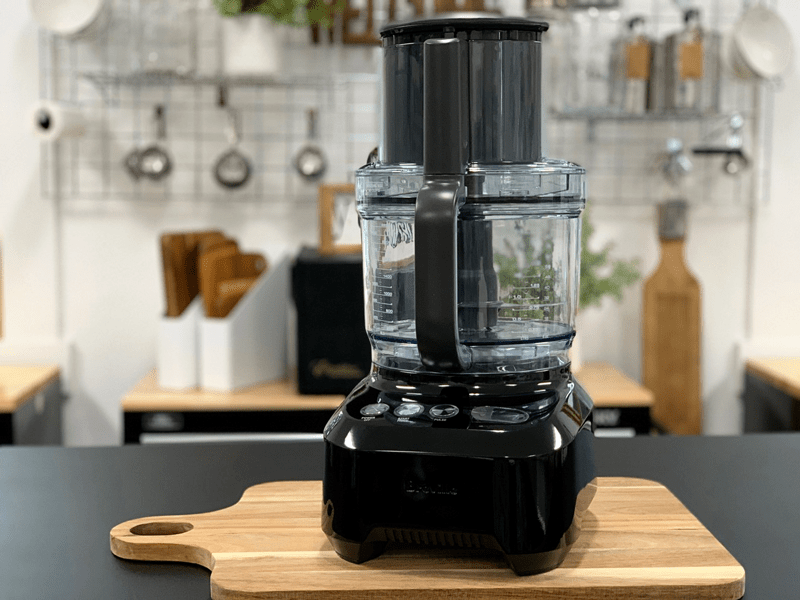

#3 – Cleaning and Caring for Your Food Processor
Most of us don’t know what we’d do without our food processor. If you’re not there quite yet, you will soon. If you love your food processor as much as I love mine, you will want to take care of it properly so it will last you years to come. Just like any other appliance that we purchase, the more love you give it, the more love it will give back! Now, I realize that there are oodles of different makes and models, so be sure to acquaint yourself with the owner’s manual that comes with it. What I am about to share should easily carry across the board.

General Cleaning
It goes without saying (but I will say it anyway), clean your food processor every time you use it. The longer you let it sit around dirty, the harder it will be to clean it. Let’s break things down to the typical parts and pieces that you will be cleaning.
Blades:
- First things first, NEVER place the blades in a sink filled with soapy water. The last thing you want to do is to forget that it is in there and cut yourself as you blindly thrust your hand into the cloudy water. It’s best to give it a quick rinse and set it next to the sink until you are ready to clean it (same goes for knives, just saying).
- Holding it by the core, scrub from the center of the blade to the outside edge to avoid cutting yourself.
- It is best to hand wash the blades because hot water (from a dishwasher) can damage the blades over time and even melt the plastic coating.
- If you are nervous about using a rag when cleaning the blade, a nylon brush can help clean blades without the stress of injury.
Container and Lid:
- An easy way to start the cleaning process is to squeeze a few drops of dish soap in the bottom of the container and fill it halfway with warm water. Place the lid on and run the food processor for a few seconds.
- Dump out the water and place the container and lid separately in the sink basin and give it a few swirls with a soapy rag. Rinse and dry.
- If need be, use an old toothbrush to clean the hard to reach places to avoid the growth of bacteria.
The Base
- It’s a great habit to give the food processor base a quick wipe down to keep it shiny and new.
- Use a damp cloth with dish soap or vinegar to sanitize the exterior and remove any tough stains.
Deep Cleaning Tips
- If you start to notice any off-putting odors coming from your food processor, put your hazmat suit on before proceeding. Ok, so that’s a bit silly. Got to have some fun when talking about cleaning a food processor?!
- Create a solution of one part baking soda and one part warm water, add it to a sink basin of warm water and soak the parts and pieces for ten to fifteen minutes. Then rinse thoroughly.
- Never assemble clean, wet parts. Make sure they are completely dry before reassembling to prevent molds and bacteria from forming.
Take care of your investments and they will take care of you! blessings, amie sue
© AmieSue.com